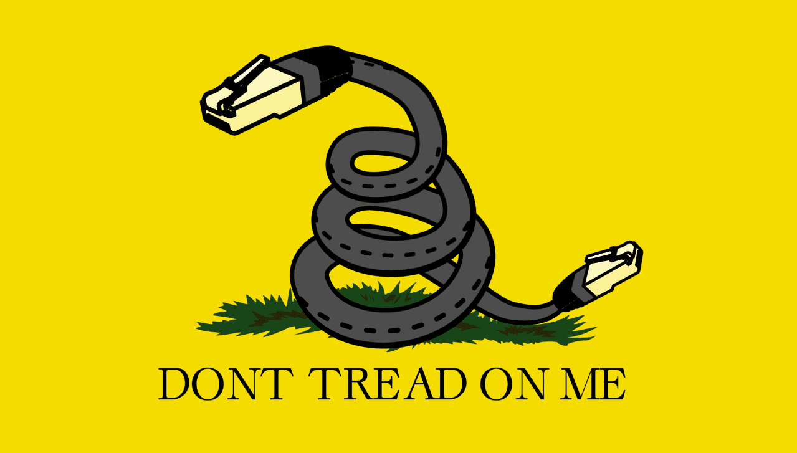
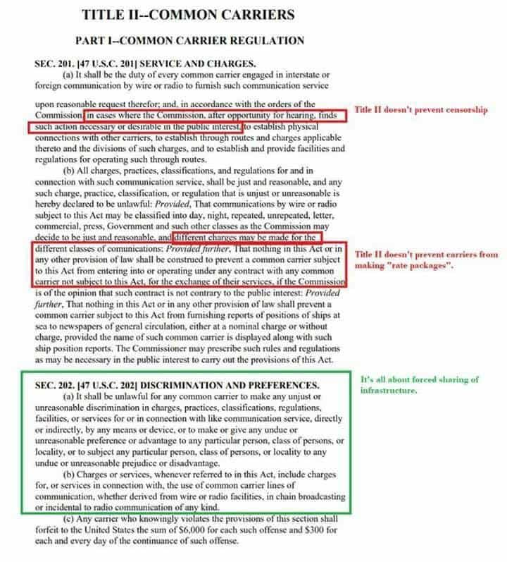
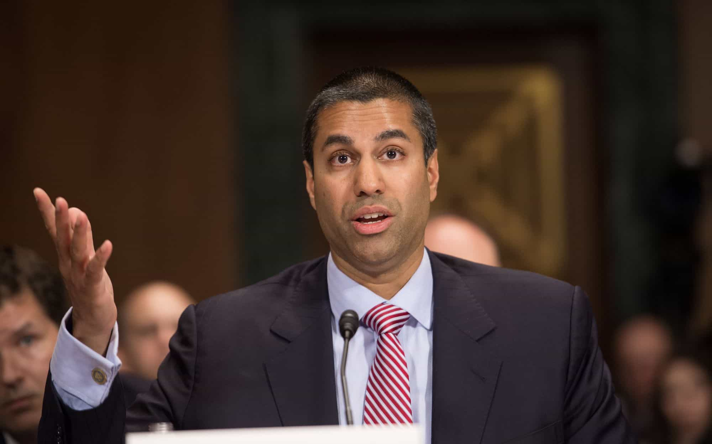

Last month, FCC Chairman Ajit Pai announced that the FCC will vote to end net neutrality regulations on December 14, reversing policy instituted by the Obama administration. Under the current rules, Internet service providers are purportedly forbidden from prioritizing certain types of traffic over others or charging users or websites extra money for faster bandwidth speeds. Given that Republicans hold a 3-2 majority on the FCC board, the net neutrality repeal is very likely to pass.
The left, cuckservatives, and Big Tech companies such as Google, Twitter, and Facebook have come out hard in favor of net neutrality, alleging that it will result in censorship by ISPs and higher Internet costs for consumers, allowing ISPs to hold the entire Web to ransom. Some alt-media figures have also fallen for this line: for example, Red Ice’s Henrik Palmgren claimed that the FCC will “murder the Internet” on December 14.
All of this is hysteria.
The reality is that net neutrality has little to do with freedom of speech or consumer rights, and ending it will have little effect on the lives of the average American. Indeed, given how fervently left-wing tech giants like Google and Twitter are supporting net neutrality, ending it may actually harm them and keep them from censoring right-wingers, which is what they’ve been doing for the past three years.
Here’s why you shouldn’t care if net neutrality is abolished…
The Myth Of Net Neutrality

To begin with, “net neutrality” is a loaded and inaccurate term. It was coined by Tim Wu, a far-left lawyer and university professor who ran for New York Lieutenant Governor in 2014 on a socialist platform and campaigned for Bernie Sanders during the presidential race last year. Wu invented the concept of “net neutrality” as a solution to a nonexistent problem.
Everyone wants a free and neutral Internet, but “net neutrality” has nothing to do with this. Net neutrality refers to Title II of the Communications Act of 1934, which regulates what are referred to as “common carriers,” utilities that hold de facto monopolies and thus are required to adhere to standards of open access and use. Title II originally governed such things as phone service and electricity, but two years ago, the FCC’s 2015 Open Internet Order decreed that they applied to Internet service providers as well.
As Gab founder Andrew Torba has pointed out, existing legislation does not prevent ISPs from charging different rates for different types of services, which net neutrality advocates claim will become reality should the FCC end it. All “net neutrality” does is force ISPs to treat all Internet traffic equally. This benefits edge providers such as Google and Facebook by letting them avoid paying their fair share for bandwidth, while financially hurting ISPs:

For that matter, the nightmare scenario in which ISPs charge consumers extra fees to use certain services has never occurred in the U.S. or any other Western country. Despite net neutrality having only been law for two years, American ISPs have never sold Internet service like it was cable TV, forcing consumers to purchase individual packages. Indeed, the only two countries I could find where this model is used are Turkey and China, two non-Western countries whose governments strictly regulate online speech and censor websites on their own.
To put it simply, net neutrality is corporate welfare. Google, Twitter, Facebook, Netflix and other edge providers support it because it gives them a discount on their operating costs at the expense of ISPs, who must pay to maintain and upgrade the infrastructure that makes the Internet possible to begin with. Net neutrality has as much relevance to consumers as Coke vs. Pepsi, and net neutrality defenders are nothing more than useful idiots for Silicon Valley.
Returning Freedom Of Speech To The Internet
Net neutrality defenders who claim that ending it will allow ISPs to censor the Internet don’t have a leg to stand on either. As Ajit Pai himself has pointed out, pro-net neutrality edge providers such as Google, Twitter, and Facebook have spent the past three years heavily censoring the Internet by manipulating search algorithms and banning right-wing users, under the guise of cracking down on “hate speech” or combating “fake news.”
Indeed, here’s a sampling of how left-wing social media sites and search engines have been censoring people at the same time they’re crying about net neutrality ending:
The FCC’s own filing against net neutrality cited Gab being banned from the Google Play and Apple stores for “hate speech,” Twitter banning an ad from Tennessee Republican Senate candidate Marsha Blackburn, and the Daily Stormer being banned from numerous domain registrars as examples of how edge providers have abused their power in order to control thought and speech online.
These companies hold a monopoly on worldwide Internet communication and use: it is virtually impossible to most people to get by without using at least one of them in some capacity. And yet Google, Twitter, and Facebook want to manipulate and censor information online while claiming to be defenders of a free and open Internet? The chutzpah is so thick you could cut it with a knife.
The reality is that U.S. law already has a precedent for forcing both edge providers like Google and Twitter as well as ISPs to allow any and all speech on their platforms, making net neutrality completely unnecessary. Contrary to the leftist/libertarian argument that these corporations can ban whoever they like due to the “free market,” the Constitution establishes set limits on how private entities can behave towards those who use their property.
In 1946, the Supreme Court decided the case of Marsh v. Alabama, in which a Jehovah’s Witness was arrested for trespassing because she was distributing religious literature in Chickasaw, Alabama, a town that was wholly owned by the Gulf Shipbuilding Corporation. Marsh argued that because the town’s roads and sidewalks were the only means by which she could exercise her freedom of speech—and because the town of Chickasaw had been open to public use in all other respects—the trespassing arrest violated her rights under the First Amendment.
In a 5-3 decision, the Supreme Court ruled in Marsh’s favor. Justice Hugo Black decreed that private entities do not have the right to ban speech on their property if they happen to own a monopoly on the means by which speech can take place. Black also argued that the more that private entities open their property up to public use, the fewer rights they have to control or ban what people do on that property.
Given that Google, Twitter, Apple, Facebook, and other edge providers are publicly-accessible entities that have deliberately pushed for monopoly control over the Internet, it’s clear that Marsh v. Alabama prohibits them from censoring right-wingers. The statute also applies to ISPs, since they wield a monopoly over Internet access. All it would take to shut down online censorship is a halfway-decent lawyer arguing that these left-wing Big Tech companies are literally violating the Constitution.
Indeed, Ajit Pai’s comments attacking Twitter and Google have scared leftists into thinking that the FCC will go after edge providers next. For example, here’s a Tweet from Sleeping Giants, the leftist pressure group that successfully convinced several companies to drop their advertising from Breitbart:
From a freedom of speech perspective, net neutrality laws are completely unnecessary, since free speech rights on ISPs and edge providers are guaranteed by Marsh v. Alabama. Given that net neutrality completely failed to keep Google, Facebook, and other Silicon Valley giants from censoring the Internet—and their current howling in support of net neutrality—it’s possible that the existing regulations have done more harm than good.
Not My People, Not My Problem

Unlike in years past, it is unlikely that net neutrality defenders will be able to win over the FCC. While the cause of a free and open Internet used to unite leftists and right-wingers, the heavy-handed censorship by Google et al. in the name of fighting “hate speech” in the past three years has woken countless people to the fact that net neutrality is a fraud.
Ultimately, the net neutrality debate is not a battle of free speech vs. censorship, or consumer rights vs. corporations: it’s two groups of crony capitalists fighting over who will exercise more power over the Internet. The outcome of this fight doesn’t matter to the average American since it will have little if any impact on our lives. If you’re an advocate for net neutrality, you are a tool of corporate interests and nothing more.
Read Next: Did Microsoft Commit Voter Fraud In Iowa To Ensure Donald Trump’s Defeat?